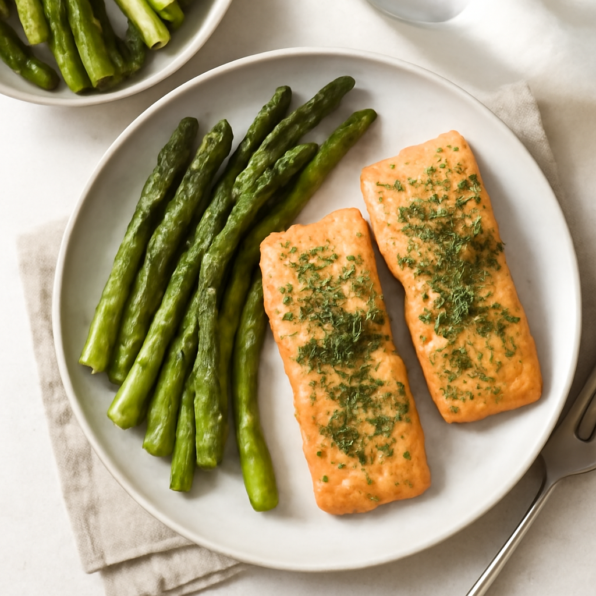

Friday — Oven-Baked Herbed Salmon with Asparagus

Cook Time:
30 minutes
Method:
oven
salmon
healthy
baked
omega-3
Ingredients for 6
6 salmon fillets
2 tablespoons olive oil
1 lemon (zested and juiced)
2 teaspoons dill
1 teaspoon salt
1 pound asparagus (trimmed)
Instructions
Preheat oven to 400°F (200°C).
Place salmon and asparagus on a baking tray. Drizzle with olive oil, lemon juice, dill, and salt.
Bake for 20 minutes or until salmon flakes easily.
Toddler Notes
Ensure salmon is cooked through and flake into small pieces.
Cut asparagus into bite-sized pieces for toddlers.
← Back to weekly plan